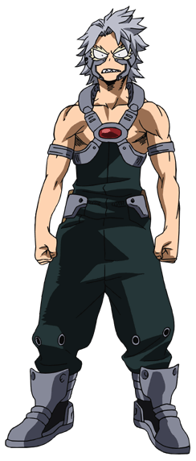
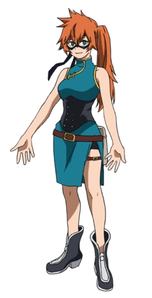
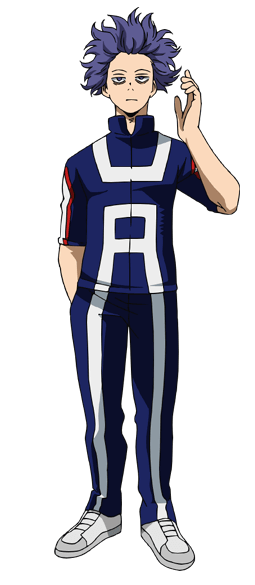
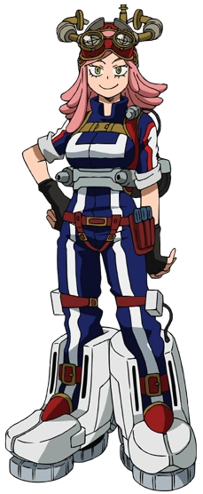
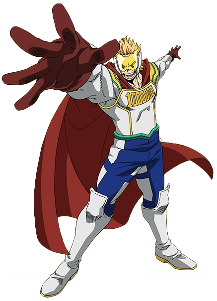
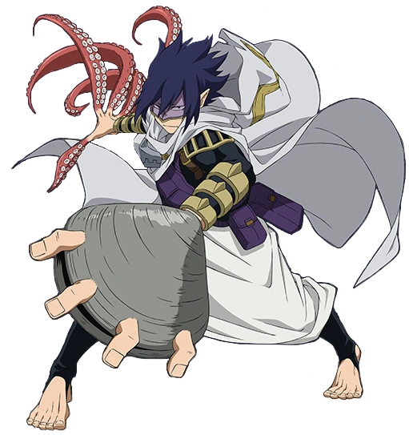
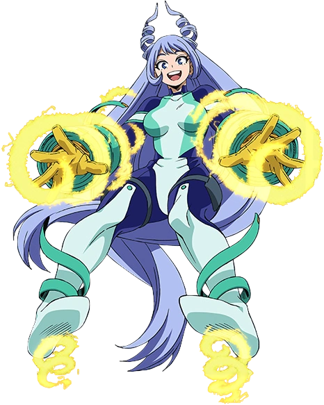

Don: Copiar. Puede copiar el don de quien toca y puede usarlo por 5 minutos.
Afiliación: Estudiante del curso de héroes, clase 1-B
Cumpleaños: 5/13
Altura: 170 cm
Tipo de sangre: A
Le gusta: Comida francesa

Tetsutetsu Tetsutetsu (Real Steel):
Don: Acero. Puede transformar todo su cuerpo en metal, funciona en altas y bajas temperaturas.
Afiliación: Estudiante del curso de héroes, clase 1-B
Cumpleaños: 10/16
Altura: 174 cm
Tipo de sangre: B
Le gusta: Juegos de pelea, espinaca

Itsuka Kendo (Battle Fist):
Don: Manos grandes. Puede agrandar sus manos tanto como para cubrir a una persona.
Afiliación: Estudiante del curso de héroes, clase 1-B
Cumpleaños: 9/9
Altura: 166 cm
Tipo de sangre: O
Le gusta: Motocicletas, café negro

Hitoshi Shinso:
Don: Lavado de cerebro. Puede lavarle el cerebro y controlar a sus oponentes que respondan a algo que él diga.
Afiliación: Estudiante del curso de estudios generales
Cumpleaños: 7/1
Altura: 177 cm
Tipo de sangre: AB
Le gusta: Gatos

Mei Hatsume:
Don: Zoom. Puede ver claramente hasta una distancia de 5 kilómetros.
Afiliación: Estudiante del curso de apoyo
Cumpleaños: 4/18
Altura: 157 cm
Tipo de sangre: O
Le gusta: Steampunk

Mirio Togata (Lemillion):
Don: Permeabilidad. Su cuerpo puede atravesar lo que sea, cuando lo usa, incluso la respiración pasa a través de él.
Afiliación: Estudiante del curso de héroes, tercer año
Cumpleaños: 7/15
Altura: 181 cm
Tipo de sangre: AB
Le gusta: Ramen, comedia

Tamaki Amajiki (Suneater):
Don: Manifestar. Puede manifestar partes y características de todo lo que come.
Afiliación: Estudiante del curso de héroes, tercer año
Cumpleaños: 3/4
Altura: 177 cm
Tipo de sangre: B
Le gusta: Mariposas

Nejire Hado (Nejire-chan):
Don: Oleada. Puede manipular y generar ondas de choque en forma de espiral a partir de su energía vital.
Afiliación: Estudiante del curso de héroes, tercer año
Cumpleaños: 10/6
Altura: 164 cm
Tipo de sangre: B
Le gusta: Lirios, té de jazmín